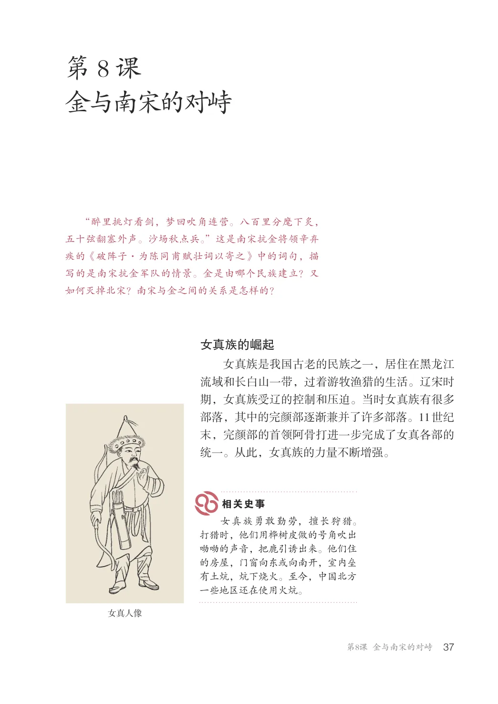
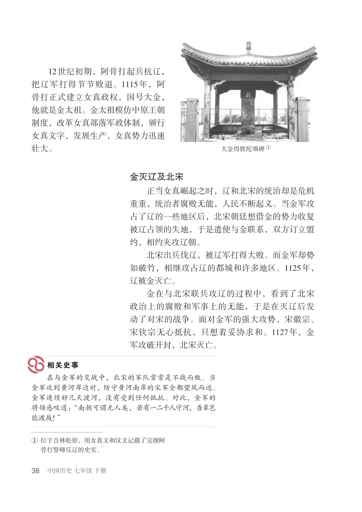
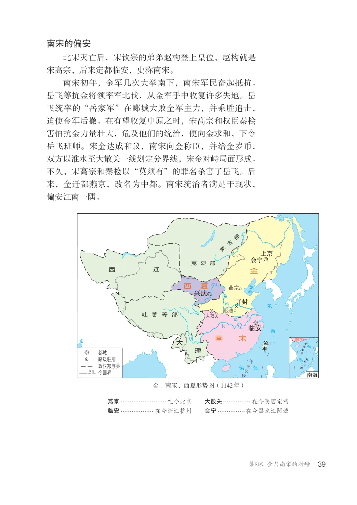
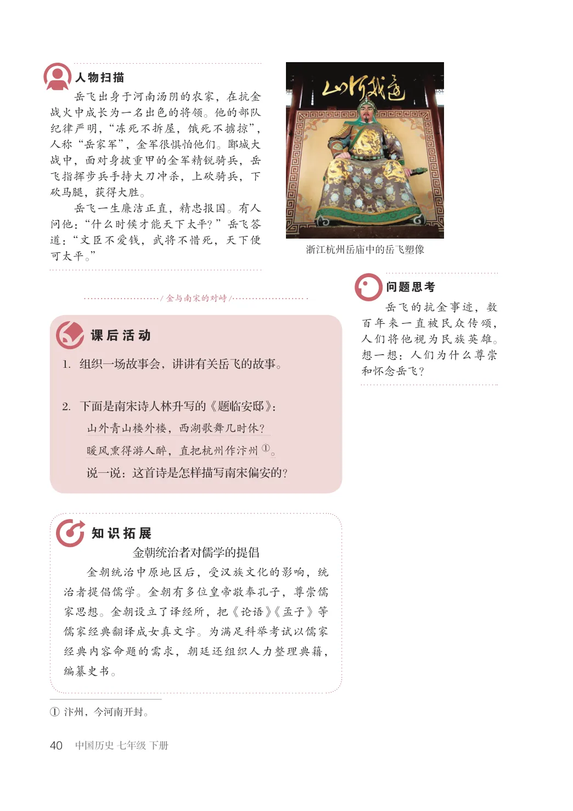

第2单元 · 教材第 37–40 页
第8课 金与南宋的对峙
文字版依据教材 PDF 文本层整理；复杂地图、图表及版面关系请以右侧教材原页为准。
“醉里挑灯看剑，梦回吹角连营。八百里分麾下炙，五十弦翻塞外声。沙场秋点兵。”这是南宋抗金将领辛弃疾的《破阵子·为陈同甫赋壮词以寄之》中的词句，描写的是南宋抗金军队的情景。金是由哪个民族建立？又如何灭掉北宋？南宋与金之间的关系是怎样的？
女真族的崛起
女真族是我国古老的民族之一，居住在黑龙江流域和长白山一带，过着游牧渔猎的生活。辽宋时期，女真族受辽的控制和压迫。当时女真族有很多部落，其中的完颜部逐渐兼并了许多部落。11世纪末，完颜部的首领阿骨打进一步完成了女真各部的统一。从此，女真族的力量不断增强。
女真族勇敢勤劳，擅长狩猎。打猎时，他们用桦树皮做的号角吹出呦呦的声音，把鹿引诱出来。他们住的房屋，门窗向东或向南开，室内垒有土炕，炕下烧火。至今，中国北方一些地区还在使用火炕。
女真人像

12世纪初期，阿骨打起兵抗辽，把辽军打得节节败退。1115年，阿骨打正式建立女真政权，国号大金，他就是金太祖。金太祖模仿中原王朝制度，改革女真部落军政体制，颁行女真文字，发展生产，女真势力迅速壮大。
大金得胜陀颂碑①
金灭辽及北宋
正当女真崛起之时，辽和北宋的统治却是危机重重，统治者腐败无能，人民不断起义。当金军攻占了辽的一些地区后，北宋朝廷想借金的势力收复被辽占领的失地，于是遣使与金联系，双方订立盟约，相约夹攻辽朝。北宋出兵伐辽，被辽军打得大败。而金军却势如破竹，相继攻占辽的都城和许多地区。1125年，辽被金灭亡。金在与北宋联兵攻辽的过程中，看到了北宋政治上的腐败和军事上的无能，于是在灭辽后发动了对宋的战争。面对金军的强大攻势，宋徽宗、宋钦宗无心抵抗，只想着妥协求和。1127年，金军攻破开封，北宋灭亡。
在与金军的交战中，北宋的军队常常是不战而败。当金军攻到黄河岸边时，防守黄河南岸的宋军全都望风而逃。金军连续好几天渡河，没有受到任何抵抗。对此，金军的将领感叹道：“南朝可谓无人矣，若有一二千人守河，吾辈岂能渡哉！”
①位于吉林松原，用女真文和汉文记载了完颜阿
骨打誓师反辽的史实。

南宋的偏安
北宋灭亡后，宋钦宗的弟弟赵构登上皇位，赵构就是宋高宗，后来定都临安，史称南宋。南宋初年，金军几次大举南下，南宋军民奋起抵抗。岳飞等抗金将领率军北伐，从金军手中收复许多失地。岳飞统率的“岳家军”在郾城大败金军主力，并乘胜追击，迫使金军后撤。在有望收复中原之时，宋高宗和权臣秦桧害怕抗金力量壮大，危及他们的统治，便向金求和，下令岳飞班师。宋金达成和议，南宋向金称臣，并给金岁币，双方以淮水至大散关一线划定分界线，宋金对峙局面形成。不久，宋高宗和秦桧以“莫须有”的罪名杀害了岳飞。后来，金迁都燕京，改名为中都。南宋统治者满足于现状，偏安江南一隅。
上京会宁
金
西夏开封兴庆
吐蕃等部
临安南宋大
千里长沙
路级驻所
万里石塘千里长沙
政权部族界
南海今国界
金、南宋、西夏形势图（1142年）
燕京......................... 在今北京
大散关............... 在今陕西宝鸡
临安.................. 在今浙江杭州
会宁...............在今黑龙江阿城

岳飞出身于河南汤阴的农家，在抗金战火中成长为一名出色的将领。他的部队纪律严明，“冻死不拆屋，饿死不掳掠”，人称“岳家军”，金军很惧怕他们。郾城大战中，面对身披重甲的金军精锐骑兵，岳飞指挥步兵手持大刀冲杀，上砍骑兵，下砍马腿，获得大胜。岳飞一生廉洁正直，精忠报国。有人问他：“什么时候才能天下太平？”岳飞答道：“文臣不爱钱，武将不惜死，天下便可太平。”
浙江杭州岳庙中的岳飞塑像
/ 金与南宋的对峙/
岳飞的抗金事迹，数百年来一直被民众传颂，人们将他视为民族英雄。想一想：人们为什么尊崇和怀念岳飞？
1．组织一场故事会，讲讲有关岳飞的故事。
2．下面是南宋诗人林升写的《题临安邸》：
山外青山楼外楼，西湖歌舞几时休？暖风熏得游人醉，直把杭州作汴州①。说一说：这首诗是怎样描写南宋偏安的？
金朝统治者对儒学的提倡金朝统治中原地区后，受汉族文化的影响，统治者提倡儒学。金朝有多位皇帝敬奉孔子，尊崇儒家思想。金朝设立了译经所，把《论语》《孟子》等儒家经典翻译成女真文字。为满足科举考试以儒家经典内容命题的需求，朝廷还组织人力整理典籍，编纂史书。
①汴州，今河南开封。
